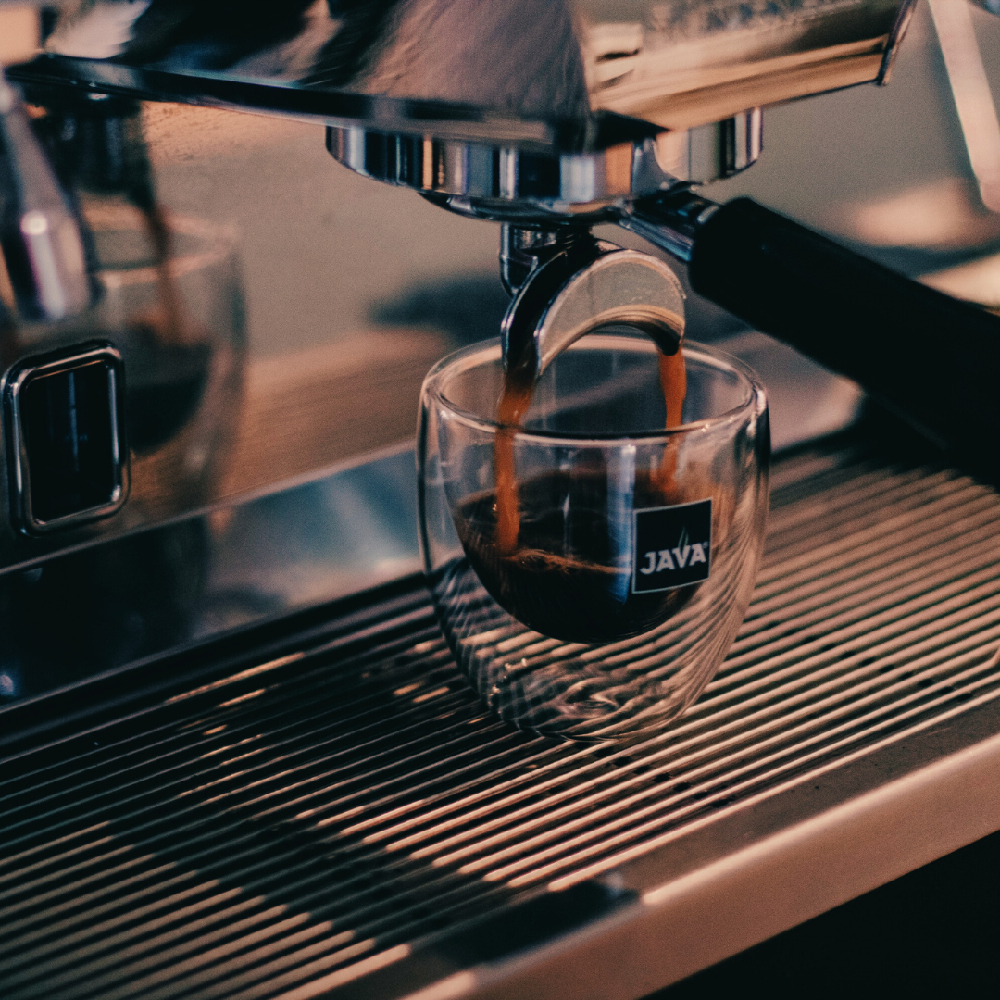
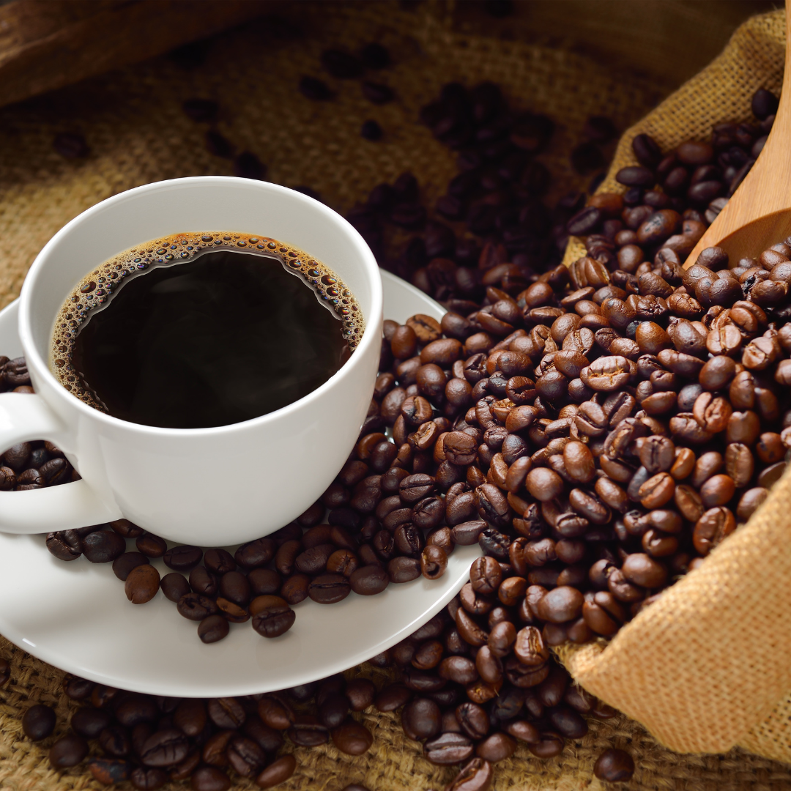
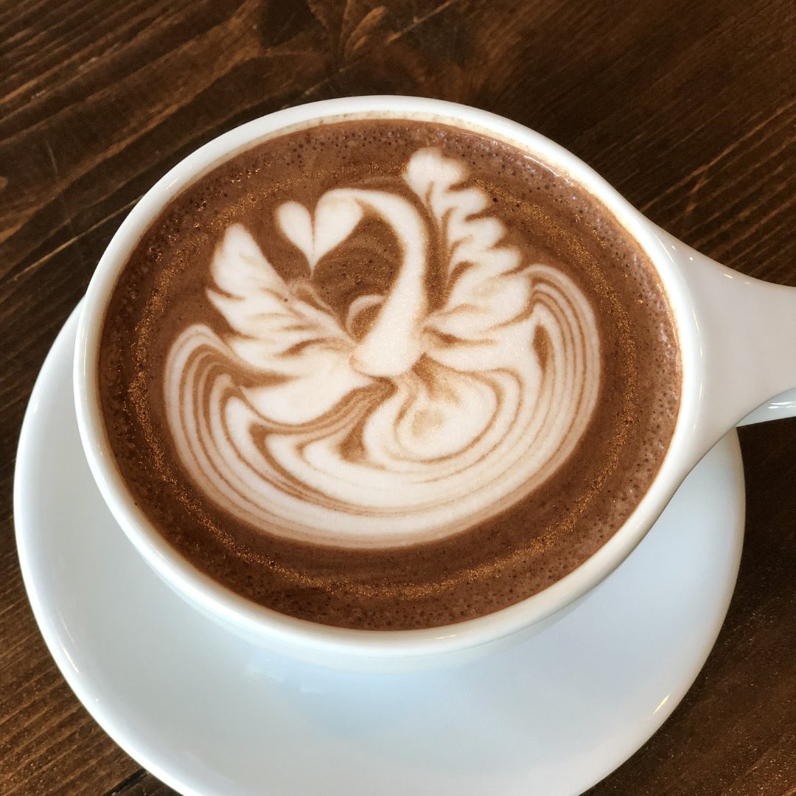
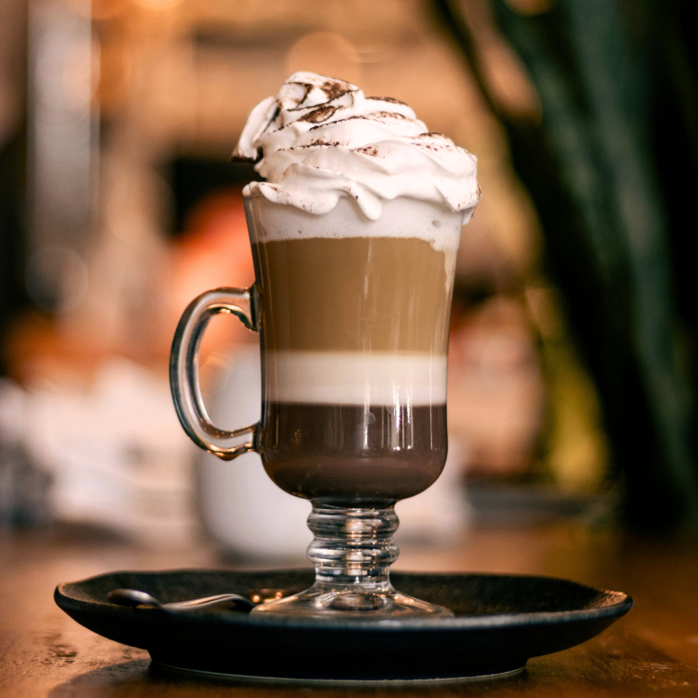

Expresso
Café intenso e concentrado, preparado sob alta pressão para extrair o máximo de sabor em um pequeno gole.
Ver mais

Americano
Espresso diluído em água quente, ideal para quem prefere um café mais suave, porém cheio de aroma.
Ver mais

Cappuccino
Combinação perfeita de espresso, leite vaporizado e espuma cremosa, com toque sutil de chocolate em pó.
Ver mais.png)
Latte
Espresso misturado a uma grande quantidade de leite vaporizado, resultando em sabor suave e textura aveludada.
Ver mais
Macchiato
Espresso com um toque de espuma de leite, mantendo o sabor forte com leve suavização.
Ver mais

Mocha
Espresso combinado com chocolate e leite vaporizado, para os amantes de café com sabor adocicado e cremoso.
Ver mais